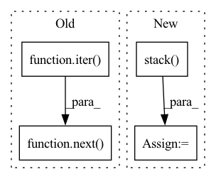

Pattern ID :1565
Before Change
subset, _ = self.dataset.split_set(dataset, percent=self.sample_ratio)
clean_loader = self.dataset.get_dataloader(mode="train", dataset=subset)
_input, _label = next(iter( DataLoader(subset, batch_size=len(subset), num_workers=0)) )
poison_input = self.attack.add_mark(_input)
newset = TensorDataset(poison_input, _label)
backdoor_loader = self.dataset.get_dataloader(mode="train", dataset=newset)
After Change
clean_loader = self.dataset.get_dataloader(mode="train", dataset=subset)
_input, _label = zip(*subset)
_input = torch.stack( _input)
_label = torch.tensor(_label)
poison_input = self.attack.add_mark(_input)
newset = TensorDataset(poison_input, _label)
backdoor_loader = self.dataset.get_dataloader(mode="train", dataset=newset)In pattern: SUPERPATTERN
Frequency: 3
Non-data size: 4
Instances Fragment ID: 6981292
Project Name: ain-soph/trojanzoo
Commit Name: 2d256dfbc3fd7d58cdc878fbfecf9109c0201f9a
Time: 2020-12-14
Author: ain-soph@live.com
File Name: trojanzoo/defenses/backdoor/neuron_inspect.py
M Class Name: Neuron_Inspect
N Class Name: Neuron_Inspect
M Method Name: get_explation_feature(1)
N Method Name: get_explation_feature(1)
M Parent Class: BackdoorDefense
N Parent Class: BackdoorDefense
M File Name: trojanzoo/defenses/backdoor/neuron_inspect.py
N File Name: trojanzoo/defenses/backdoor/neuron_inspect.py
M Start Line: 64
M End Line: 64
N Start Line: 64
N End Line: 66
Before Change
pin_memory=True
)
self.device = device
self.support_images, self.support_labels = next(iter( self.val_loader) )
def get_images(self):
Returns the support set images on the selected deviceAfter Change
super().__init__(**kwargs)
self.device = device
self.images = torch.stack( [instance[0] for instance in self]) .to(self.device)
def get_images(self) -> Tensor:
Fragment ID: 6981293
Project Name: sicara/easy-few-shot-learning
Commit Name: 985ed0366e526c9fc1323d77fafa7b99539b70ab
Time: 2022-06-23
Author: etienne.bennequin@gmail.com
File Name: easyfsl/methods/support_set_folder.py
M Class Name: SupportSetFolder
N Class Name: SupportSetFolder
M Method Name: __init__(2)
N Method Name: __init__(6)
M Parent Class: ImageFolder
N Parent Class: ImageFolder
M File Name: easyfsl/methods/support_set_folder.py
N File Name: easyfsl/methods/support_set_folder.py
M Start Line: 47
M End Line: 66
N Start Line: 43
N End Line: 53
Before Change
poison_y = self.target_class * torch.ones_like(other_y)
trainset = self.dataset.get_dataset(mode="train")
clean_x, clean_y = next(iter( self.dataset.get_dataloader(mode="train", dataset=trainset, batch_size=len(trainset),
shuffle=True, num_workers=0, pin_memory=False)) )
discrim_x = torch.cat((other_x, poison_x))
discrim_y = torch.cat((torch.zeros_like(other_y),
torch.ones_like(poison_y)))After Change
trainset = self.dataset.get_dataset(mode="train")
clean_x, clean_y = zip(*trainset)
clean_x = torch.stack( clean_x)
clean_y = torch.tensor(clean_y)
discrim_x = torch.cat((other_x, poison_x))
discrim_y = torch.cat((torch.zeros_like(other_y), Fragment ID: 6981296
Project Name: ain-soph/trojanzoo
Commit Name: 2d256dfbc3fd7d58cdc878fbfecf9109c0201f9a
Time: 2020-12-14
Author: ain-soph@live.com
File Name: trojanzoo/attacks/backdoor/bypass_embed.py
M Class Name: Bypass_Embed
N Class Name: Bypass_Embed
M Method Name: sample_data(1)
N Method Name: sample_data(1)
M Parent Class: BadNet
N Parent Class: BadNet
M File Name: trojanzoo/attacks/backdoor/bypass_embed.py
N File Name: trojanzoo/attacks/backdoor/bypass_embed.py
M Start Line: 65
M End Line: 66
N Start Line: 64
N End Line: 67